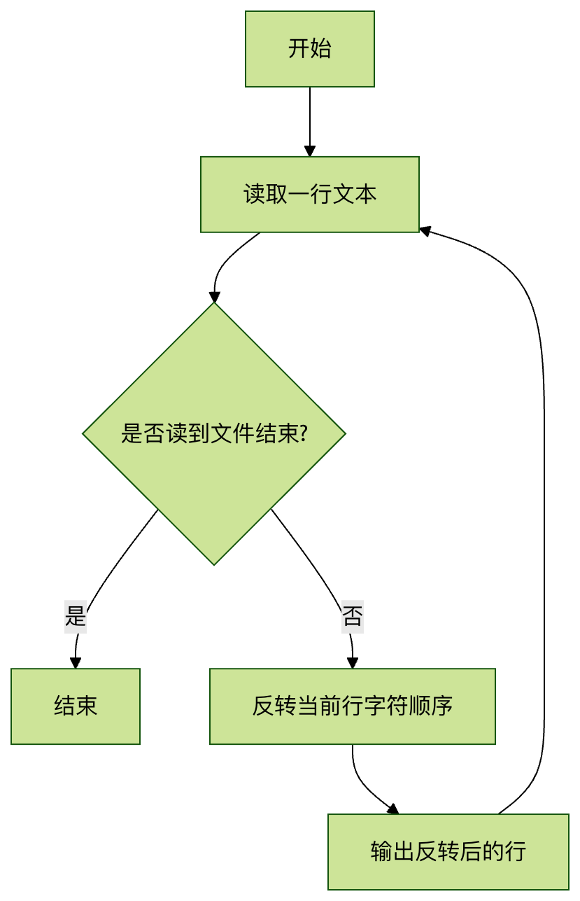

Linux rev コマンド
一、rev コマンドの概要
rev は Linux システムにおけるシンプルですが実用的なテキスト処理コマンドで、入力テキストの各行の文字順序を反転（reverse）します。このコマンド名はまさに "reverse" の略です。
基本機能
- 各行のテキストの文字順序を反転する
- 行と行の順序はそのまま維持する
- 標準入力またはファイル内容を処理する
代表的な適用シーン
- テキスト処理能力のテスト
- 回文（palindrome）のチェック
- 特殊な形式のデータ処理
- デバッグとテキスト分析
二、コマンド構文とパラメータ
基本構文
rev [选项] [文件...]
パラメータの説明
rev コマンドは非常に簡潔で、ほとんどの Linux 実装にはオプションパラメータが含まれていません：
| パラメータ | 説明 |
|---|---|
| ファイル | 処理するファイルを指定します（複数可）。指定しない場合は標準入力を読み取ります |
| -V/--version | バージョン情報を表示します（一部の実装でサポート） |
| -h/--help | ヘルプ情報を表示します（一部の実装でサポート） |
注意：Linux ディストリビューションによって rev の実装が若干異なる場合があります。
man rev具体的な説明を確認してください
三、使用例
例1：基本的な使い方
標準入力の内容を反転します：
実例
$ echo "hello world" | rev
dlrow olleh
dlrow olleh
例2：ファイル内容の処理
ファイルがあるとしますexample.txt内容は次のとおりです：
Linux Command rev
反転を実行します：
実例
$ rev example.txt
xuniL
dnammoC
ver
xuniL
dnammoC
ver
例3：複数ファイルの処理
実例
$ rev file1.txt file2.txt
2つのファイルの内容の反転結果を順に表示します
例4：回文のチェック
実例
$ echo "madam" | rev | grep -q "madam" && echo "回文です" || echo "回文ではありません"
回文です
回文です
四、動作原理
rev コマンドの内部処理フロー：

重要なポイント：
- テキストを行単位で処理し、行の順序は変わりません
- 各行の文字順序を完全に反転します（空白や特殊文字も含む）
- 元のファイル内容は変更しません
五、注意点とテクニック
よくある質問
不可視文字：rev は空白、タブなど、すべての文字を反転します
実例
$ echo -e "a\tb" | rev
b a
b a
マルチバイト文字：一部の実装では Unicode 文字を正しく処理できない場合があります
実例
$ echo "中文" | rev # 表示が異常になる可能性があります
実用的なテクニック
他のコマンドと組み合わせて複雑なパイプラインを作成：
実例
$ cat /etc/passwd | rev | cut -d: -f1 | head -5
ファイルをすばやく反転して保存：
実例
$ rev input.txt > output.txt
対称性のチェック：
実例
$ diff -s <(cat file.txt) <(rev file.txt | rev)
六、実践演習
演習1：基本操作
- 複数行のテキストを含むファイルを作成します
- rev コマンドを使用してファイル内容を反転します
- 結果を新しいファイルにリダイレクトします
演習2：応用
以下の機能を実装するシェルスクリプトを作成します：
- ファイルを引数として受け取ります
- ファイル内に回文の行が存在するかチェックします
- すべての回文行とその行番号を出力します
参考解決策
実例
#!/bin/bash
while IFS= read -r line; do
reversed=$(echo "$line" | rev)
if [ "$line" = "$reversed" ]; then
echo "回文行:$line"
fi
done < "$1"
while IFS= read -r line; do
reversed=$(echo "$line" | rev)
if [ "$line" = "$reversed" ]; then
echo "回文行:$line"
fi
done < "$1"
七、まとめ
rev コマンドはシンプルですが、テキスト処理において独自の価値があります：
- ミニマルな設計：単一機能という Unix 哲学の模範
- パイプに親和性が高い：Linux コマンドのパイプ体系に完璧に適合
- 教育的価値：テキスト処理の基本概念の理解に役立つ
rev コマンドを習得すると：
- Linux テキスト処理ツールチェーンへの理解が深まります
- sed、awk などのより複雑なテキスト処理コマンドを学ぶための基礎になります
- 特定の特殊なテキスト処理ニーズを解決できます
さらに学習することをお勧めします：
tacコマンド（行順序を逆に出力）sedコマンドのテキスト変換機能awkの文字列処理関数